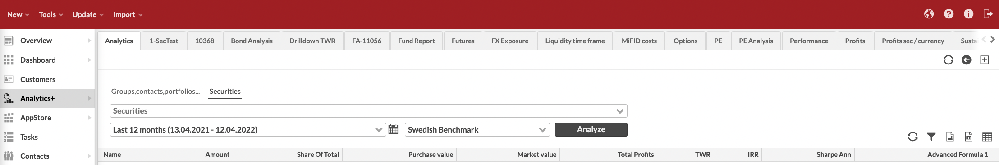

Analytics+
Analytics+ allows you to easily analyze your portfolios, providing you with an extensive set of analytical key figures to analyze your investments.
Choose if you need to analyze portfolios (Groups, contacts, portfolios tab) or securities (Securities tab).
For portfolios, analysis parameters are:
Group, customer or portfolio you want to analyze.
Grouping for your analysis. You can group your analysis with:
Portfolios.
Security-related parameters, such as asset classes and types, security type, classifications, countries, marketplace, currencies, issuer or issuer group.
Pre-defined combinations, such as Asset type and portfolio, Security type and subtype, Portfolio and sub portfolio, or Portfolio and asset type.
Custom grouping, when you can freely select the grouping levels from the available alternatives. If you want to include the actual position level in your analysis, select "Security", "Position" or "Positions by customer" as the last grouping option.
When grouping with asset type selection, you are also required to select which allocation group is used in grouping your analysis.
Date range for your analysis.
|  |
For securities, analysis parameters are:
Security you want to analyze (you can select multiple securities).
Date range for your analysis.
Benchmark index chosen from the general benchmarks defined in Preferences. To learn more, see Preference - Portfolios.
When you choose the parameters, the Analyze button turns black to indicate you changed your criteria and should update your analysis.
Analytics+ also allows you to save your frequently used analysis and different sets of selected columns for later use.
Based on your selected parameters, the analysis is presented as a table with analytical key figures accompanied with a return graph and allocation pie chart. Remember that your analysis (or the analytical key figures) can be exported as an Excel or PDF file, and the graphs at the bottom can be printed out or downloaded as a PDF or image files.
Table with analytical key figures
The table at the top allows you to select your desired columns from a wide range of different analytical figures. All the analytical figures are available for the selected time period and fixed time periods of 1, 3, 6, 9, 12 months and year-to-date (YTD). See below for a comprehensive list of available analytical figures.
You can also hide positions through right-clicking the table, allowing you to easily and effectively view the analysis only on the group level. Whether the positions are hidden or shown is remembered for your user name.
Return graph and allocation pie chart
The graphs at the bottom visualize the overall performance for the selected time period, show the purchase value compare to market value, allowing you to track how your portfolios’ value has developed, and draws the current date's allocation for the selected portfolio(s).
You can easily re-draw the performance and allocation graphs for different visualizations:
Select one of the pre-define time intervals to zoom in to the chart, or drag an area of the chart with your mouse you want to zoom in to.
Select an individual position or group (i.e. an individual row) from the table to re-draw the return graph for the selected position or group.
Select multiple positions or groups to re-draw the return graph for comparison.
Click a point in the return graph to re-draw the allocation pie to show the selected day's allocation.
Analytics+ provides you with tools to export time series of underlying data from Analytics+. This provides you with means to figure out how different figures are calculated in Analytics+ and how the underlying data has changed over time. You can also use the exported time series to further enrich your data, for example to apply further calculations in a spreadsheet or turn the time series into diagrams. (Available from FA 3.9 onward)
Right-click your selection in Analytics+ and choose to Export time series of all underlying data as XLSX or Export time series of TWR-related data as XLSX. Exports contain:
Time series of the selected data based on your selected date range, each day’s values on its own row.
All underlying data available in Analytics+ or TWR-related data with relevant formulas for you to track how TWR was calculated each day.
Each time series on its on sheet in the Excel, if you multi-selected rows before taking the export.
The time series export does not export the columns you have selected in Analytics+ nor the values shown in Analytics+ columns - the time series export exports the time series of the underlying "raw" data that Analytics+ uses to calculate the figures it shows, such as TWR % for a specific time period.
You can flexibly export different data sets through selecting different levels in your analysis. You can export data for individual positions, for any available group level (e.g. “Stocks” or “Funds”), or for total “Investments”. Select different portfolios or groups to aggregate data, different groupings to gain new levels to export data from, and different time periods to control the length of your time series.
The tables below list the main measurements and formulas available in Analytics+. In addition to the below described measures, different time periods (1, 3, 6, 12 months and year-to-date (YTD)) are available for certain key ratios. In addition, you can select Code and Name.
Logarithmic (natural) returns are used as a input in most of the calculations.
New columns are added into Analytics+ in each version - if you are running an older version of FA, you might not have all the below columns available. Refer to the Release notes for when new values are introduced.
Basic measures
Column/ Name | Description/ How to interpret |
|---|---|
Average market value | Average market value during the analysis period. Calculated using the total number of days in the analyzed period (including the days with zero value positions). |
Average purchase value | Average purchase value during the analysis period. Calculated using the total number of days in the analyzed period (including the days with zero value positions). |
Average share of parent | Average share (of market value) of parent position during the analysis period. Calculated using the total number of days in the analyzed period (including the days with zero value positions). |
Average share of total | Average share (of market value) of total market value during the analysis period. Calculated using the total number of days in the analyzed period (including the days with zero value positions). |
Bm code (benchmark code) | Potential values: PF / AGGR / <security code> |
Bm name (benchmark name) | Potential values: [Portfolio] / [Sum] / <security name> |
ISIN code | Shows the ISIN Code of the security, if the security has an ISIN code. ISIN code is only shown on the lowest level of analysis for security positions. |
CostsCosts (sec) | Sum of transaction-related costs. Sec numbers are changes in local currency (FX:ed to portfolio currency for aggregation). |
Other costs | Sum of transaction trade amounts, when transaction type has negative return effect. |
Total costs | Sum of "Costs" and "Other costs". |
Realized profits Realized profits (o) Realized profits (sec) Realized profits (fx) | Sum of realized profits. Available both against transaction values and booked values. Profit is also divided into profit from the security's price change and profit from fx rate change. E.g. during the period, 50 units was sold with profit +100, then realized profits would be +100. |
Unrealized profits Unrealized profits (clean) Unrealized profits (o) Unrealized profits (sec) Unrealized profits (fx) | Sum of unrealized profits. It is calculated by summing up the changes of daily market value - purchase value. Available both against transaction values and booked values. Profit is also divided into profit from the security's price change and profit from FX rate change. From FA 3.5 onward, these profit columns show profits including accrued interest - the (clean) version of each column shows the profits without accrued interest. If in the beginning of the period, the unrealized profit (i.e. market value - purchase value) was +100. Then in the end of the period, it had gone down to +50. Unrealized profits would be -50 (+50 - (+100) = -50). |
Unrealized profits % Unrealized profits % (o) | Unrealized profits / trade amount. Also known as "Change%". |
Other profits Other profits (clean) | Sum of transaction trade amounts, when transaction type has positive return effect (e.g. dividend and coupons). The (clean) version shows the profits without paid accrued interest. |
Total profits Total profits (clean) Total profits (o) Total profits (sec) Total profits (fx) | Total of realized, unrealized and other profits. Includes transaction fees but excludes other costs. Profit is also divided into profit from the security's price change and profit from FX rate change. From FA 3.5 onward, these profit columns show profits including accrued interest - the (clean) version of each column shows the profits without accrued interest. Total profits gained in the portfolio after all transaction related fees but excluding e.g. management fees recorded as separate cost transactions. |
Total gross profits Total gross profits (clean) Total gross profits (o) Totalgross profits (sec) Totalgross profits (fx) | Total of realized, unrealized and other profits. Excludes transaction fees and other costs. Both against transaction values and booked values. Profit is also divided into profit from the security's price change and profit from FX rate change. From FA 3.5 onward, these profit columns show profits including accrued interest - the (clean) version of each column shows the profits without accrued interest. Total profits gained in the portfolio after all transaction related fees also including e.g. management fees recorded as separate cost transactions. |
Total net profits Total net profits (clean) Totalnet profits (o) Totalnet profits (sec) Total net profits (fx) | Total of realized, unrealized and other profits. Includes transaction fees and other costs. Both against transaction values and booked values. Profit is also divided into profit from the security's price change and profit from FX rate change. From FA 3.5 onward, these profit columns show profits including accrued interest - the (clean) version of each column shows the profits without accrued interest. Total profits gained in the portfolio after all transaction related fees also including e.g. management fees recorded as separate cost transactions. |
Market trade amount | Market value excluding accrued interest in the end of the period (end of the day value). |
Market trade amount start | Market value excluding accrued interest in the beginning of the period (beginning of the day value, i.e. previous day's end of the day value). |
Market trade amount change | How much market trade amount changed during the period. |
Market unit price | Market unit price (only available on position/security level). |
Market FX rate | Market exchange rate (only available on position/security level). |
Purchase trade amount Trade amount Trade amount (o) | Purchase trade amount in the end of the period (end of the day value). Trade amount shows the open trade amount of the position. Both against transaction values and booked values. |
Purchase trade amount start Trade amount start Trade amount start (o) | Purchase trade amount in the beginning of the period (beginning of the day value, i.e. previous day's end of the day value). |
Purchase trade amount change Trade amount change Trade amount change (o) | How much purchase trade amount changed during the period. |
Purchase unit price Unit price Unit price (o) | Purchase unit price (only available on position/security level). |
Purchase FX rate FX rate FX rate (o) | Average purchase exchange rate (only available on position/security level). |
Sold trade amount change | How much sold trade amount changed during the period. |
Accrued interest | Accrued interest in the end of the period (end of the day value). |
Accrued interest start | Accrued interest in the beginning of the period (beginning of the day value, i.e. previous day's end of the day value). |
Accrued interest change | How much accrued interest accumulated during the period. |
Paid accrued interest Paid accrued interest (sec) | Paid accrued interest (i.e. accrued interest recorded on transactions) accumulated during the period. |
Paid accrual Paid accrual (sec) | Paid accrual (i.e. accrual recorded on transactions) accumulated during the period. |
Accrual | Accrued income in the end of the analysis period. When your mutual fund position's market price contains the accrued income element. Accrual is calculated based on your fund security’s accrual (maintained in security’s market data) as Accrual = amount x accrual. |
Accrual change | How much income accrued during the analysis period. See Accrual how accrued income is calculated. |
Market value | Market value including accrued interest in the end of the period (end of the day value). Market value = market trade amount + accrued interest. |
Market value highest | Highest market value during the analysis period. |
Market value lowest | Lowest market value during the analysis period. |
Market value start | Market value in the beginning of the period (beginning of the day value, i.e. previous day's end of the day value). |
Market value change | How much market value changed during the period. |
Market date | Date of the latest available market unit price for the position. |
Purchase value Purchase value highest Purchase value lowest Purchase value start Purchase value change | Purchase value = purchase trade amount, except with futures it is zero. |
Neg net cashflow (negative net cashflow) | Sum of negative daily net cashflows (negative values). Negative net cashflows on a position level occur when e.g selling instrument (sold value is "withdrawn" from the position). When calculating TWR, negative net cashflows are assumed to happen in the end of the day. |
Pos net cashflow (positive net cashflow) | Sum of positive daily net cashflows (positive values). Positive net cashflows on a position level occur when e.g buying instrument (purchase value is "deposited" to the the position). When calculating TWR, positive net cashflows are assumed to happen in the beginning of the day. |
Net cashflow | Sum of daily net cashflows (both positive and negative). |
Accrued net cashflow | Aggregate sum of daily net cashflows over the period of time. Similar to 'Paid in capital' but net cashflows also includes e.g. taxes paid out when dividend is received. |
Share of parent | Share of parent position's market value. |
Share of total | Share of total market value. |
Amount | Amount (i.e. units or nominal) is the sum of amount field on positions. Only calculated on position (security or account) level. To view amounts grouped and sorted per Issuer, group your analysis by Issuer. |
Holding % | Amount / security's outstanding units (if it is > 0). If security has outstanding units, then this figure is calculated. Otherwise it is zero (or empty). Only calculated on position (security) level. |
Exposure | Exposure to market risk. Calculated the same way as market trade amount (until FA 3.7). Market exposure / delta exposure. Calculated as amount x unit price x delta x block size / market FX rate unit price = security's (or underlying security's) market unit pricedelta = multiplier measuring the sensitivity of the position to the movement in the price of the underlying securityblock size = number of unit of underlying that one unit in the position represents Measures how much is the exposure measured using market value. It can also be calculated on instruments, whose market value does not directly reflect the risk such as option and futures. Then the calculation takes into account also delta, value of the underlying security and block size. For more information about market exposure, see Investopedia. For more information about delta exposure, see the Northstar Risk page. |
Pos exposure (positive exposure) | Sum of increases of exposure due to transactions during the period. Value is positive. During one day, there could be both positive and negative changes in the exposure. The net of the changes is the total value that the exposure is changed |
Neg exposure (negative exposure) | Sum of decreases of exposure due to transactions during the period. Value is negative. |
Absolute exposure | Absolute value of exposure, Abs(exposure). Sums up all exposures' absolute value. That is, there could be two positions: one with +500 exposure and the other -200 exposure. The absolute exposures would be +500 and +200 and total absolute exposure +700. |
Absolute exposure (base) | Absolute exposure in the beginning of the period adjusted by related changes:if exposure in the beginning of the day >= 0 -> Abs(positiveExposure)if exposure in the beginning of the day < 0 -> Abs(negativeExposure) Can be used as a base value for exposure based TWR calculation in customer formulas. The formula to calculate the daily TWR % using market value (base) would be: ( Unrealized profits + realized profits + other profits - other costs ) / Absolute exposure (base) |
Leverage | Exposure / market value. For more information, see Investopedia. |
Market value (base) | Market value in the beginning of the period adjusted by changes in open trade amount:if ( market value start = 0 AND dPurchaseTradeAmount > 0 )-> ABS(Market value start + dPurchaseTradeAmount)ORif ( market value start = 0 AND dSoldTradeAmount > 0 )-> ABS(Market value start - dSoldTradeAmount)ORif ( market value start > 0 AND dPurchaseTradeAmount > 0 )-> ABS(Market value start + dPurchaseTradeAmount)ORif ( market value start < 0 AND dSoldTradeAmount > 0 )-> ABS(Market value start - dSoldTradeAmount) The base for market value based TWR calculation. Currently not used by FA. Its current logic is to use market value start + pos net cashflow always as based. The formula to calculate the daily TWR % using market value (base) would be: ( Unrealized profits + realized profits + other profits - other costs ) / market value (base) |
Daily profit and loss | If future: unrealized profits + realized profits - costs change Otherwise:unrealized profits - neg net cashflow - pos net cashflow Used when calculating TWR. The daily TWR % is calculated this way: daily profit and loss / ( market value start + pos net cashflow) with futures: daily profit and loss / Absolute exposure (base) |
Daily profit and loss (sec) | If future:unrealized profits (sec) + realized profits (sec) - costs change Otherwise:unrealized profits (only the effect of the change in the security price is taken into account) - neg net cashflow - pos net cashflow Used when calculating TWR (sec) and TWR (fx). TWR (sec) = daily profit and loss (sec) / ( market value start + pos net cashflow) TWR (fx) = TWR - TWR (sec) : the difference is calculated via log change for accuracy |
Daily costs | Calculated as costs + other costs + implicit costs (i.e. costs embedded in security price as ex-post costs). Used to adjust the TWR when calculating the TWR Gross. |
Total ex-post costs | Total costs categorized as ex-post costs. Also separated into "One-off charges", "On-going charges", "Charges related to transactions", "Charges related to ancillary services", "Incidental charges", "Others costs 1", "Other costs 2", "Other costs 3", "Other costs 4", "Other costs 5". |
Total ex-post costs (PF) | Total costs categorized as ex-post costs from portfolio (i.e. transactions). Also separated into "One-off charges", "On-going charges", "Charges related to transactions", "Charges related to ancillary services", "Incidental charges", "Others costs 1", "Other costs 2", "Other costs 3", "Other costs 4", "Other costs 5". |
Total ex-post costs (sec) | Total costs categorized as ex-post costs from securities (i.e. defined in security cost info). Also separated into "One-off charges", "On-going charges", "Charges related to transactions", "Charges related to ancillary services", "Incidental charges", "Others costs 1", "Other costs 2", "Other costs 3", "Other costs 4", "Other costs 5". |
Taxes with profit effect | Sum of taxes that affect trade amount. |
Taxes with profit effect (change) | Change in the amount of taxes that affect trade amount over a period of time. |
Total votes | Total number of security votes. Total votes = Outstanding units * Votes per share. You can always view total votes per portfolio position. To view total votes grouped and sorted per Issuer, group your analysis by Issuer. |
Votes | Number of votes for the position. Votes = Position units * Votes per share. You can always view votes per portfolio position. To view votes grouped and sorted per Issuer, group your analysis by Issuer. |
Votes % | Percentage of position votes out of total votes. Votes % = Votes / Total votes. You can view votes percentage per portfolio position. To view votes percentage grouped and sorted per Issuer, group your analysis by Issuer. |
Performance measures
Column | Name | Description | How to interpret and use |
|---|---|---|---|
TWR | Time weighted return of the period / Total Return | Calculated based on GIPS standards based on market values and net cashflows (including accrued interests). Daily returns are compounded resulting to the TWR of the period. See also TWR calculation. | Time weighted return of the period is the effective return percentage of the investment i.e. the return what you got. Compounding returns means that the returns are added to the initial investment for the whole period. For more information about the time-weighted return, see the Wikipedia article. |
Twr Ann | Annualized time weighted return | Annualized time weighted return. Calculated by converting TWR to daily TWR and annualizing it (1 + daily TWR) * (days in the year / number of days on TWR) If selected time period for viewing analytics is one year or less, the column shows TWR instead of TWR Ann. | Annualization of some period's time weighted return. |
Twr Contr Twr Contr (sec) Twr Contr (fx) | Contribution to TWR | FA 3.8 onward: TWR Contribution is, simply put, the contribution a position (or group) has to the overall TWR this specific position (or group) is part of. The sum of all individual TWR contributions, should sum to the total TWR of the aggregate (for example a portfolio). TWR Contribution is defined as the contribution a single constituent (e.g. position) has to the total group of constituents (e.g. portfolio). Interpreted as how much a single factor is contributing to a total, and can as such be done on any level or breakdown. E.g. positions can contribute to the total TWR of sector groups, which in turn can contribute to the total portfolio TWR, when split up into such parts. Also known as absolute return attribution. Contribution itself is not done against a benchmark. See also TWR calculation. Before FA 3.8: Daily contribution of a position is equal to its daily return x weight of the position in the beginning of the day. The contribution of a position over time is chained (i.e. index series) based on the daily contributions. The contribution of a position over time is calculated based on the chained contribution series and then scaled relative to the total return of the period to force it add up 100%. | Describes how much (percentage points) does the position contribute to the overall performance of the parent position. E.g. portfolio TWR is 10% and it has two positions A and B. A contributed +12% to the portfolio return and B -2%. +12% + (-2%) = 10% |
TWR Gross | Gross time weighted return of the period | See "TWR" above. Calculated excluding "Costs", "Other costs" and "Total ex-post costs (sec)". The correction is done so, that the assumed return on the costs is 0%. That is, there is no assumption that the costs would have been re-invested with the same performance as the rest of the portfolio. | |
TWR Gross Ann | Annualized gross time weighted return | See "TWR Ann" above. Annualized gross TWR. | |
IRR | Internal rate of return | Calculated iteratively by finding an interest rate that when used to discount future cashflows equals the current value of the investment. | Effective return (what you will get) of the investment. For more information about th einternal rate of return, see Wikipedia. |
IRR Net | Internal rate of return after all fees | See "IRR" above. | |
IRR Gross | Internal rate of return before fees | Calculated like IRR Net, but in the end of the period, all the "other costs" are add back to end market value in order to take away their negative effect on the return. | |
IRR (sec) | Internal rate of return in security currency | Calculated iteratively by finding an interest rate that when used to discount future cashflows in security equals the current value of the investment. Cashflows are converted to security currency using the report FX rate of the position (prior to FA 3.4, using the market FX rate on the cashflow date). | |
IRR Net (sec) | Internal rate of return after all fees in security currency | See "IRR (sec)" above. | |
IRR Gross (sec) | Internal rate of return before fees in security currency | Calculated like IRR Net (sec), but in the end of the period, all the "other costs in security currency" are add back to end market value in order to take away their negative effect on the return. | |
Twr Bm | Time weighted return of benchmark | See "TWR" above, calculated for benchmark. | |
Twr Bm Ann | Annualized time weighted return of benchmark | See "Twr Ann" above, calculated for benchmark. | |
TWR (sec) | Time weighted return from security | TWR (sec) is calculated so that the market value change excludes the effect of the fx. | |
TWR (fx) | Time weighted return from fx rate | TWR (fx) is different between TWR and TWR (sec) | |
TWR - BM | Over/under return versus benchmark | Difference between TWR and TWR Bm | |
TWR - BM Contr | Over/under return versus benchmark contribution | Difference between TWR and TWR Bm weighted by the share of total | |
YTM | Yield-to-maturity | ||
Duration | Macaulay duration | Calculated for bond-securities with relevant fixing information, and aggregated to group level if all children of the group have a value. The manual values you have defined under your security's Key figures are picked up and override the calculated values if entries can be found for the selected time period of the analysis. | The weighted average term to maturity of the cash flows from a bond. The weight of each cash flow is determined by dividing the present value of the cash flow by the price. |
Modified Duration | Modified duration | Calculated for bond-securities with relevant fixing information, and aggregated to group level if all children of the group have a value. The manual values you have defined under your security's Key figures are picked up and override the calculated values if entries can be found for the selected time period of the analysis. | Expresses the measurable change in the value of a security in response to a change in interest rates. Modified duration follows the concept that interest rates and bond prices move in opposite directions. This formula is used to determine the effect that a 100-basis-point (1 percent) change in interest rates will have on the price of a bond. |
Convexity | Convexity | Calculated for bond-securities with relevant fixing information, and aggregated to group level if all children of the group have a value. The manual values you have defined under your security's Key figures are picked up and override the calculated values if entries can be found for the selected time period of the analysis. | Measure of the curvature, or the degree of the curve, in the relationship between bond prices and bond yields. Convexity demonstrates how the duration of a bond changes as the interest rate changes. |
Average Return | Geometric average of returns on security | Calculated by transforming the daily historical security values to indexed values, estimating the daily average return from the changes (returns) on the indexed values and annualizing the estimated daily average return. Finally, the annualized average return is transformed from logarithmic returns to simple returns ( = e ^ (Logarithmic Annualized Daily Average return) ). | Geometric average return is the effective return of investments, when compounding is considered i.e. assuming that the investment is not fixed. For more information, see Investopedia. Arithmetic average of log. returns = Geometric average of simple returns. |
Average Return Bm | Geometric average of returns of benchmark | See "Average Return" above, calculated for benchmark. | |
Total Return | Time weighted return of the period | See "TWR" above. | |
Total Return Bm | Time weighted return of benchmark | See "TWR" above, calculated for benchmark. | |
Indexed Value Highest | Maximum value of the indexed returns on given period | Calculated by indexing the returns of the period such that: starting value is 100 and the value(t+1) = (1 + return(t)) * Value(t). Then selecting the highest value. | Indexed value highest tells the highest return during the period calculated from the start of the period. |
Indexed Value Lowest | Minimum value of the indexed returns on given period | Calculated by indexing the returns of the period such that: starting value is 100 and the value(t+1) = (1 + return(t)) * Value(t). Then selecting the lowest value. | Indexed value lowest tells the lowest return during the period calculated from the start of the period. |
Max drawdown | Maximum Drawdown | A maximum drawdown (MDD) is the maximum loss (TWR) from a peak to a trough, before a new peak is attained. Drawdown is expressed in percentage terms and computed as: (Trough Value – Peak Value) / Peak Value. | Maximum Drawdown (MDD) is an indicator of downside risk over a specified time period. It can be used both as a stand-alone measure or as an input into other metrics such as "Return over Maximum Drawdown" and Calmar Ratio. For more information, see Investopedia. |
Max drawup | Maximum Drawup | Reverse version of "Maximum drawdown". | |
Bm Max Drawdown | Benchmark maximum drawdown | See "Max drawdown" above, calculated for benchmark. | |
Bm Max Drawup | Benchmark maximum drawup | See "Max drawup" above, calculated for benchmark. | |
Consistency | Consistency | Number of days investments daily time weighted return was higher than its benchmark's daily TWR / total number of days in the analysis. Percentage figure. | How consistently investments beat their benchmark on a daily basis. Available also in time series analysis through API on the given periodic level e.g. monthly, |
Risk-adjusted performance measures
Risk-adjusted measures listed below makes it easier to compare different assets, portfolios and securities. Different to basic performance measures, these measures take also into consideration the riskiness of the investment.
Column name | Name | Description | How to interpret and use |
|---|---|---|---|
Sharpe Ann | Annual Sharpe's ratio | Sharpe's ratio = Average excess return on asset / Asset Volatility, where Average excess return = Average return on asset - Average return on risk-free asset. Annual Sharpe's ratio is calculated from annualized average excess return and volatility. | Sharpe's ratio is used to quantify the return-risk profile of the investment. The higher the ratio the better has the performance been i.e. better compensation for the risk taken. Sharpe's ratio should be used in situations where we want to compare our investments as a whole. Since Sharpe's ratio is used in mean-variance optimization of investment's and it is in units of average excess return per unit of risk, it should be used when (mean-variance) optimizing portfolios e.g. comparing differently allocated portfolios. The standalone information value of Sharpe's ratio is limited. For more information on the Sharpe ration, see Wikipedia. |
Sharpe Bm | Sharpe's ratio of benchmark index | See "Sharpe Ann" above. | |
Treynor | Treynor's ratio | Average return of asset minus average risk-free asset return divided by asset's market (benchmark) beta of the period. Similar to Sharpe's ratio, but instead of comparing to total risk of some investment portfolio, market beta is used as a measure of risk. Treynor = (Average return of asset - Average return of risk-free asset) / Beta of asset | Treynor's ratio is similar in its interpretation to Sharpe's ratio. It is used when we want to compare our investments separately e.g. securities or different portfolios, not the whole investment. Using market beta as risk measure. For more information on Treynor's ratio, see Investopedia. |
Treynor BM | Treynor's ratio of benchmark index | See "Treynor" above. | |
Treynor Sqr | Treynor's squared | Treynor square is calculated by dividing asset's alpha by its beta. Treynor Sqr = alpha / beta. | Treynor's square is similar in its interpretation to Treynor's ratio. Instead of using average excess return over risk-free asset, excess return over benchmark is used. |
Information Ratio | Informatio ratio (IR) | Information ratio is calculated by dividing excess return of asset against its benchmark divided by tracking error of the asset. IR = excess return / TE | Information ratio is used to evaluate the fund (portfolio) managers skill. Since IR uses active returns (return on asset/portfolio minus return on benchmark) on the calculation, it can be used as a risk-to-volatility measure of active investing. For more information, see Wikipedia. |
Appraisal Ratio | Appraisal ratio (AR) | AR = alpha / asset specific volatility. | Interpreted similarly to Information ratio, but uses measures obtained by regression analysis. |
M2 | Modigliani risk-adjusted performance measure | Calculated by: Sharpe's ratio of portfolio times volatility of benchmark minus* benchmark excess return (* in theory: plus risk-free asset's return). | M2 can be interpreted as risk-adjusted performance against some benchmark (e.g., market portfolio). It is easier to interpret than Sharpe's ratio, which is useful when comparing investments. Instead of being unitless (or perhaps in unit that is harder to interpret), M2 is in percentage points i.e. M2 = 0,05 means that our portfolio/asset has been able to generate 5% of risk-adjusted returns relative to the benchmark used. For more information about Modigliani risk-adjusted performance measure, see Wikipedia. |
Statistical analysis measures: Basic statistical figures and linear regression for investment management
Column name | Name | Description | How to interpret and use |
|---|---|---|---|
Column | Name | Description | How to interpret and use |
Vol Ann | Annualized volatility | Annualized sample standard deviation of daily logarithmic returns abound the period average logarithmic return. Equal weights are used. Period Volatility = SQRT(( SUM(( x(n) - x(avg.))^2 ) / (N-1) ) Vol Ann = SQRT(Ann multiple) * Period Volatility. Ann multiple = multiple that makes the period to equal to year. For example, when we have calculated volatility for period of 1 month, then Vol Ann = SQRT(12) * 1 month volatility. | Simple estimation of annual risk. For more information on annual volatility, see Wikipedia. |
Vol Bm | Volatility of benchmark | See "Vol Ann" above. | |
Vol Ann EWMA | Annualized volatility based on exponentially weighted moving average | Annualized sample standard deviation of daily logarithmic returns abound the period average logarithmic return. The latest observations have bigger weight than older observations. Decay factor 0.94 is used. Period Volatility = SQRT(( SUM(( x(n) - x(avg.))^2 x ( 1 - 0.94 ) x 0.94 ^n ) ) Vol Ann = SQRT(Ann multiple) * Period Volatility. Ann multiple = multiple that makes the period to equal to year. For example, when we have calculated volatility for period of 1 month, then Vol Ann = SQRT(12) * 1 month volatility. | Considered better estimating the volatility For more information on EWMA, see Investopedia. |
Vol Bm EWMA | Volatility of benchmark based on exponentially weighted moving average | See "Vol Ann EWMA" above. | |
VAR | Value at risk (VaR) | VaR = Vol Ann EWMA * 1,645 (95% confidence level) VaR is shown as positive even though it is interpreted as a negative return (loss). | Value at risk measures the amount of total loss percentage for a given period with a given confidence (e.g. 95%). It only considers the downside potential of the risk compared to volatility, which also contains the upside potential of the risk. It can be interpreted as the maximum daily loss percentage of asset on a confidence level of 95% i.e. whats the possible maximum loss per day. For more information about value at risk, see Wikipedia. |
Vol | Sample volatility/standard deviation | Square root of sum of squared deviations from sample average divided by (n-1). Sample variance = 1/(n-1) * SUM( X(i) - X(AVG) ) ^ 2 Sample volatility = SQRT( Sample variance ). Where X(i) = observation i and X(AVG) = arithmetic average of X(i)'s. | Variance is a descriptive statistical measure, used to quantify the variation in the sample data. In financial context it is used as a basic measure of investments risk. For example, the higher the variation in investments yearly returns (percentages), the higher the risk involved in the investment. Volatility, together with variance, is basic measure of investments risk. Compared to variance, volatility is easier to interpret since it is in the same units as the data observed. For more information on volatility, see Wikipedia. |
Correl | Correlation coefficient | Covariance of two data samples divided by both samples' volatilities multiplied. Correlation coefficient = COV(X,Y) / (STDEV(X) * STDEV(Y)). Where COV(X,Y) = covariance between X and Y samples and STDEV() = standard deviation / volatility of sample. | Correlation coefficient is used to describe the nature of co-movement of two samples (e.g. two stocks' returns). It answers to the question "What is likely to happen to the return of stock x if stock y's return is given? (based on a historical samples and assuming that correlation is constant between these two)". Correlation coefficient gets values from range -1 to 1. When corr = 1 (positive correlation), it is likely that when x rises, y rises also and vice versa. When corr = -1 (negative correlation), it is likely that when x rises, y gets smaller and vice versa. When corr = 0 (uncorrelated), there is no dependency between the two variables. In portfolio management, correlations between stocks (returns) are used in portfolio optimization, especially when considering the risk profile of the investment since correlations between stocks (returns) affect the total portfolio volatility. For more information on correlation and dependance, see Wikipedia . |
Specific Vol | Asset specific volatility | Variance of residuals (=errors) of simple linear regression model. Residual(i) = y(i) - ( alpha + beta * x(i) ). Where y(i) = data observation i (e.g. return percentage for day i), x(i) = the explanatory variable i (e.g. market return). | Asset risk (volatility) can be divided to two different types of risk, asset specific (diversifiable risk) and systematic (market specific/non-diversifiable ) risk. Specific Vol quantifies the amount of diversifiable risk in the assets returns. For more information, see Investopedia. |
Alpha | Abnormal return / Offset parameter | Alpha is one of the parameters estimated in linear regression. Analytics+ uses simple linear regression as a model (CAPM). Ordinary Least Squares (OLS) method is used as the basis of estimation. Alpha estimation for variable Y = y(avg.) - beta * x(avg.). | Alpha, generally seen as abnormal return, is the return of portfolio/security additional to the return that is contributed by the market return. When alpha is positive the asset has been able to beat the benchmark (usually compared against market returns) and generated abnormal profits (that cannot be explained by our risk factors in our risk model, in this case CAPM). For more information, see Investopedia. |
Alpha Class90 | Alpha classification | Classification for alpha. (1 = alpha is negative, 2 = alpha is zero, 3 = alpha is positive). It is calculated by checking that the estimation and the alpha interval upper/lower end are either positive or negative. When estimated alpha is zero the interval won't be considered. | Alpha Class90 = 1 means that we can be x% confident that the population alpha is negative (x = confidence level). |
Alpha High | Alpha estimate's confidence interval, upper end | Confidence interval is calculated from t-distribution. Such that interval = estimator +/- t.inverse(confidence, degrees of freedom) * d,where estimator = estimated alpha and d = SQRT( (s2 * x2sum) / (n * sxx) ), where s2 = SSE / (n-2), x2sum = SUM( x(i)^2 ), n = number of observations, sxx = SUM( ( x(i) - x(avg))^2 ). | Confidence interval is used in statistics to quantify confidence of the estimated parameters. Since we can only estimate the "true/underlying" measures of the population from the sample (of size n). We need to somehow take into consideration the sample size and it's effect on our estimations. Usually the smaller the sample the worse our estimation is. Confidence interval denotes a value range our estimated parameter will be on a some predefined confidence level. For example, estimated alpha = 0,02 and confidence interval = [0,00; 0,04] and confidence level is 95%. We can now state that the "true/underlying" alpha will be 95 times out of 100 (if we would take samples from the population) between that confidence interval. We can also state that there is 5% chance that the alpha is over 0,04 or under 0,00. For more information on confidence interval, see Wikipedia. |
Alpha Low | Alpha estimate's confidence interval, lower end | See "Alpha High" above. | |
Beta | Beta / Market (benchmark) beta of the asset | Parameter of regression model to quantify the effect of some explanatory variable to the dependent variable. In CAPM it is the market beta. OLS -method is used as basis of estimation. Beta estimation for variable X = Cov(X, Y) / Var(X). | Beta quantifies the effect of the explanatory variable on the dependent variable. In CAPM (Capital Asset Pricing Model is practically same as simple linear regression, where explanatory variable is market return and dependent variable is return on asset of our interest) beta quantifies the effect of market's return on the return of asset we are considering. For example, lets think about stock X's return and stock index Y's return. We estimate alpha and beta through linear regression for X using Y as explanatory variable. If beta = 1, that means return on stock X will change exactly as much as the market return changes i.e. stock X is as risky as Y. If beta = 2, that means return on stock X will change twice as much the market return changes i.e. stock X is more volatile (risky) than Y. If beta = 0.5, that means stock X will change half as much as the market return changes i.e. stock X is less volatile compared to the market. If beta < 0, that means stock X will change inversely to the market. For more information, see Investopedia. |
Beta Class90 | Beta classification | Classification for beta. (1 = greater than one, 2 = equal to one, 3 = less than one, 4 = equal to zero, 5 = less than zero). | Takes into consideration the confidence interval of sample beta, e.g. Beta Class90 = 1 means that we can be x% confident that the "population" (actual beta vs. estimated beta) beta is greater than one (x = confidence level). |
Beta High | Beta estimate's confidence interval, upper end | Confidence interval is calculated from t-distribution. Such that interval = estimator +/- t.inverse(confidence, degrees of freedom) * d,where estimator = estimated beta and d = SQRT( (s2 * x2sum) / (n * sxx) ), where s2 = SSE / (n-2), x2sum = SUM( x(i)^2 ), n = number of observations, sxx = SUM( ( x(i) - x(avg))^2 ). | Confidence interval is used in statistics to quantify confidence of the estimated parameters. Since we can only estimate the "true/underlying" measures of the population from the sample (of size n). We need to somehow take into consideration the sample size and it's effect on our estimations. Usually the smaller the sample the worse our estimation is. Confidence interval denotes a value range our estimated parameter will be on a some predefined confidence level. For example, estimated beta = 1,4 and confidence interval = [1,00; 1,90] and confidence level is 95%. We can now state that the beta will be 95 times out of 100 (if we would take samples from the population) between that confidence interval. We can also state that there is 5% chance that the beta is over 1,9 or under 1. For more information, see Wikipedia. |
Beta Low | Beta estimate's confidence interval, lower end | See "Beta High" above. | |
Tracking Error | Ex-post (realized) tracking error (TE) | Standard deviation of difference between return on security and return on benchmark. TE = SQRT( 1/(n-1) * SUM ( R(p,i) - R(b,i) ) ^2 ), where R(p,i) = return on portfolio at i, R(b,i) = return on benchmark at i. | Tracking error is used as a measure of deviation from the benchmark index. It can be interpreted as an "active" risk of the investment i.e. the risk taken due to active management decisions. Actively managed portfolios have higher tracking error than passive portfolios (index following strategy). Thus, it can be used as a measure of how actively the portfolio is managed OR how well (index) fund has been at following the index. For more information, see Investopedia. |
R2 | Coefficient of determination / R-squared | R2 = 1 - ( Residual sum of squares / Total sum of squares). | R-squared quantifies the amount of variation in dependent variable that is caused by the variation in the explanatory variable. It gives a glimpse on how good our model is at explaining the factors affecting the movements in the dependent variable i.e. how good our regression line estimates the real data points. There is no rule of thumb for R2, R2 of 6% might be good for some applications (return predictive models), but low for others (e.g. factor asset pricing models). In financial context it can be used to describe the risk composition of our asset. (market/systematic risk vs. asset specific risk). For example, if R2 = 0,6, we would know that 60% of the variation in returns of asset comes from benchmarks variation i.e. our assets risk is composed of 60% market-risk and 40% asset specific risk. For more information, see Wikipedia. |
(Private Equity) Fund measures
Column | Name | Description | How to interpret and use |
|---|---|---|---|
Committed Capital | Capital committed to the fund by investors. This is contractual amount of total capital withdraw-able by the fund manager from investors. Committed capital is calculated as a sum of remaining commitment and paid in capital. | ||
Total commitment | Sum of all the commitments added to the private equity security. It is basically the same as Committed Capital, except when there is a recallable capital return. It adds to commitment and consequently to total commitment. Total commitment is calculated from transaction with commitment effect, but without amount/cashflow effect by summing up transaction's trade amount. | ||
Remaining Commitment | Remaining part of the committed capital still to be invested. Remaining commitment = Committed Capital - Paid In Capital. Remaining commitment is calculated from transaction with commitment effect by summing up either transaction's price (i.e. amount x unit price), when transaction does not have amount effect, or transaction's amount, when transaction has an amount effect. If transaction has neither amount nor cashflow effect, then the remaining commitment is summed up from transaction's price (i.e. amount x unit price). | ||
Distributions | Amount of capital distributed to investors by the fund. Distributions is a sum of other profits (see above) and amount of returned returned capital (i.e. when purchase trade amount is negative) | ||
Paid In Capital | Paid In Capital is the amount invested/utilized of the Committed Capital. Calculated by aggregating changes in the purchase trade trade amount. In practise, a sum of capital calls. Paid in Capital is decreased, when the purchase trade amount is decreased while the change in the sold trade amount is positive. This is due to e.g. sell. Reverse logic when sold short. This figure is only calculated when there is a commitment in the position. | ||
DPI | Distributions to Paid In Capital | DPI = Distributions / Paid In Capital | Accumulated return on investment. Becomes reasonable in the end-stages of fund's life-cycle. |
PIC | Paid In Capital to Committed Capital | PIC = Paid In Capital / Committed Capital | Tells the investor how invested/utilized the fund is. Also gives some information about the life-cycle of the fund. PIC = 1 = closing to end-stages of life-cycle i.e. liquidation. |
RVPI | Residual Value to Paid In Capital | RVPI = Residual Value / Paid In Capital. Residual Value = (fair) Market Value. For private equity market value is estimated by valuation. For non-PE funds it is NAV. | Measure of performance, particularly fit for the early stages of (private equity) fund. Reasonable to use before distributions. Tells the investor whether fund has been able to generate profits from its investments. When RVPI > 1, the fund has generated profits. |
TVPI | Total Value to Paid In Capital | TVPI = Total Value / Paid In Capital. Total Value = Market Value + Distributions. For private equity market value is estimated by valuation. For non-PE funds it is NAV. | Measure of performance, particularly fit for the later stages of fund's life since it takes distributions also into consideration. When TVPI > 1, the fund has been profitable for the investors. TVPI - 1 = total accumulated return for investors (excluding fees). |
Measures of benchmarks
Certain key ratios are available also for benchmark (identified with "Bm" at the end of the column name).
There is a specific logic to determine which benchmark is used in which scenario:
Portfolio's benchmark (if it exists) is always used on the portfolio level, when:
investments are grouped by portfolio
the analysis is taken on a single portfolio
If portfolio has a benchmark that a) is composed of one or many instruments (usually indices) and b) instrument is linked to a sector that is used in the grouping of the analysis => that instrument is used as a benchmark for the sector
Otherwise, if the sector has a default benchmark defined in Preferences - Asset classes and types => that benchmark is used as a benchmark for the sector
Benchmark aggregation is also supported up or down the grouping selected for the analysis with the following conditions:
Benchmarks are aggregated up if the parent does not have its own benchmark (e.g. sector benchmarks are summed up with weighted daily average of TWR Bm to the parent group and sub-portfolio benchmarks are summed up to the main portfolio if sub-portfolios are included in the grouping). If the parent portfolio has content, it will be considered one of the child portfolios in analytics+ when using "Portfolio and subportfolio" grouping. Therefore, the aggregation logic works only if the parent portfolio is empty.
Aggregated values never replace actual values (e.g. sector benchmarks or sub-portfolio benchmarks are not aggregated to portfolio, if the portfolio has its own benchmark).
Benchmarks are aggregated down as well (e.g. sector benchmark is used in instruments under the sector benchmarks). However, this does not apply to the portfolio benchmark. only to sector benchmarks.